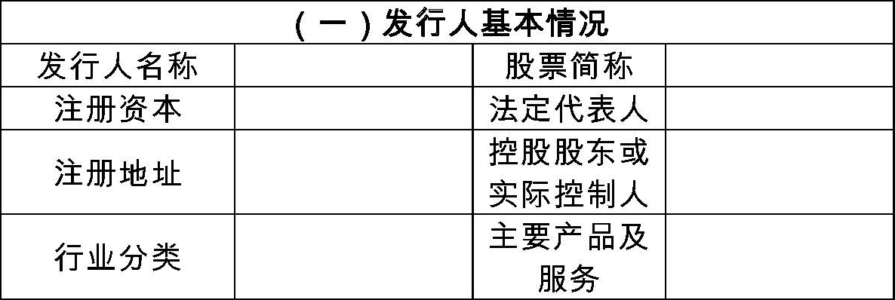
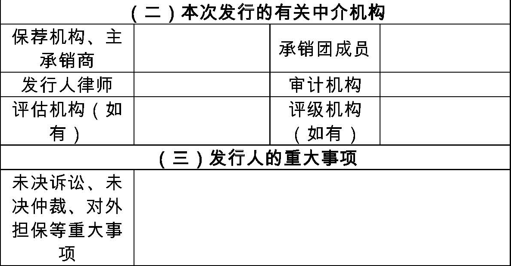
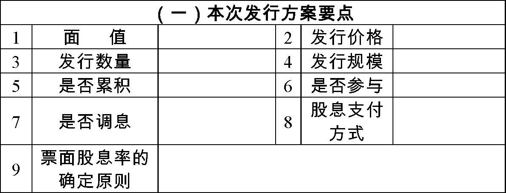
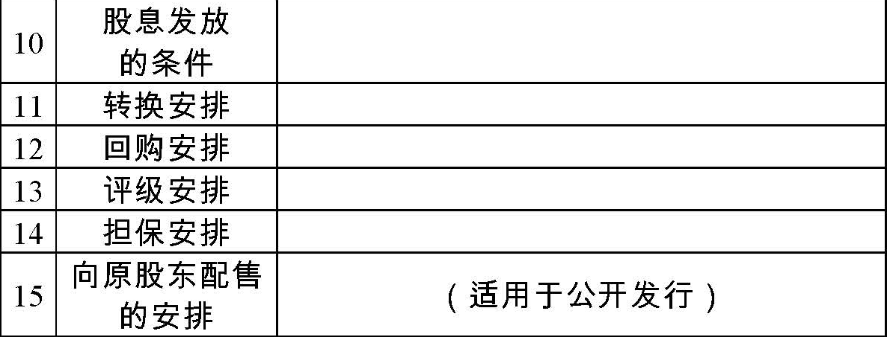
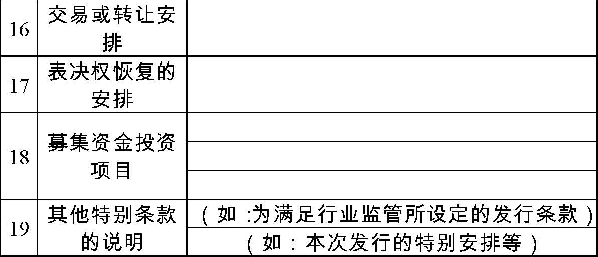
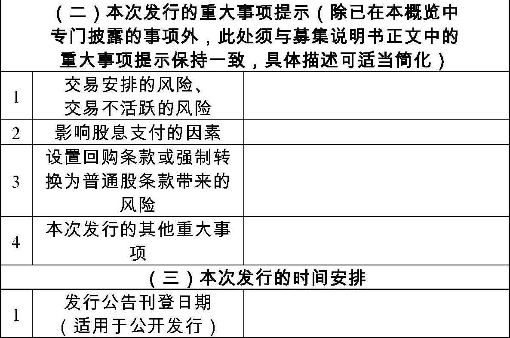
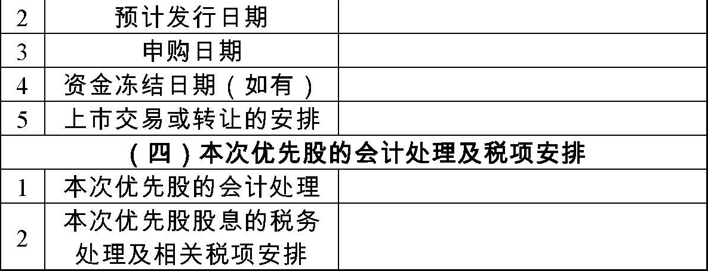
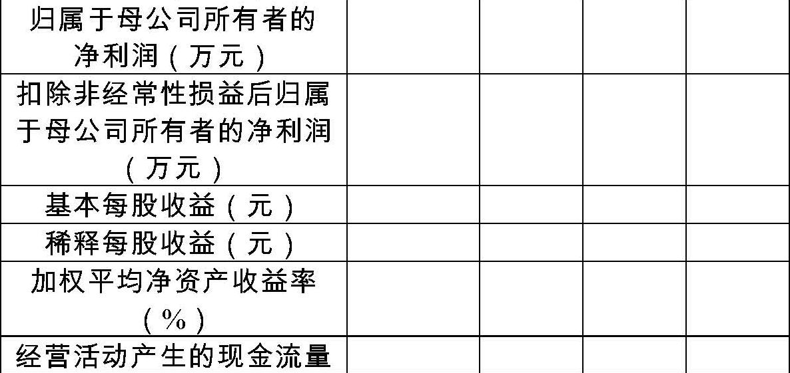
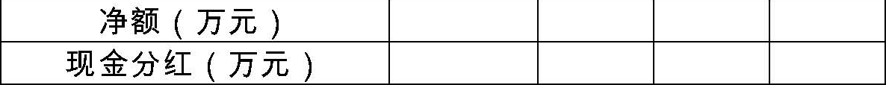

中国证券监督管理委员会公告〔2014〕14号
为规范上市公司发行优先股募集说明书的编制行为，我会制定了《公开发行证券的公司信息披露内容与格式准则第34号——发行优先股募集说明书》，现予公布，自公布之日起施行。
中国证监会
2014年4月1日
附件：公开发行证券的公司信息披露内容与格式准则第34号——发行优先股募集说明书
公开发行证券的公司信息披露内容与格式准则第34号——发行优先股募集说明书
第一章 总则
第一条 为规范上市公司发行优先股的信息披露行为，保护投资者合法权益，根据《公司法》、《证券法》、《优先股试点管理办法》等法律、法规及中国证券监督管理委员会（以下简称中国证监会）的有关规定，制定本准则。
第二条 申请发行优先股的上市公司（以下简称发行人），应当按照本准则的要求编制优先股募集说明书（以下简称募集说明书），作为向中国证监会申请发行优先股的必备文件。公开发行优先股，募集说明书应按规定披露；非公开发行优先股，募集说明书在发行结束之前不能公开披露。
第三条 募集说明书的信息披露应当以投资者需求为导向，本准则的规定是对募集说明书信息披露的最低要求。不论本准则是否有明确规定，凡对投资者做出投资决策有重大影响的信息，均应披露。本准则某些具体要求对发行人确不适用的，发行人可以根据实际情况调整，并在申报时作书面说明。
募集说明书涉及未公开重大信息的，发行人应按有关规定及时履行信息披露义务。
本次发行涉及重大资产重组的，募集说明书的信息披露还应当符合中国证监会有关重大资产重组的规定。
第四条 募集说明书的编制应遵循以下要求：
（一）表述通俗易懂，并采用表格或其他较为直观的方式披露公司及其产品、财务等情况，定性分析与定量分析方法应相互结合；
（二）引用的资料应注明来源，事实依据应充分、客观；
（三）引用的数字应采用阿拉伯数字，货币金额除特别说明外，应指人民币金额，并以元、千元、万元或百万元为单位；
（四）涉及财务数据或财务指标的，应注明相关报表口径；
（五）发行人可编制募集说明书外文译本，但应保证中、外文文本的一致性，在对中外文本的理解上发生歧义时，以中文文本为准；
（六）募集说明书概览的内容，应摘自募集说明书，并与其保持一致。
第五条 在不影响信息披露的完整性并保证阅读方便的前提下，发行人可以采用相互引征的方法，对各相关部分的内容进行适当的技术处理。对于已在本次优先股发行预案及公司日常信息披露文件中披露过的信息，如事实未发生变化，发行人可以采用索引的方法进行披露，并须提供查询网址。
发行人在募集说明书中索引公司其他信息披露文件的内容，为募集说明书的有效组成部分，发行人及中介机构应承担相应的法律责任。
第二章 募集说明书
第一节 封面、书脊、扉页、目录、释义
第六条 募集说明书文本封面及书脊应标明“XXX公司公开发行（或非公开发行）优先股募集说明书”字样，封面还应载明已经上市普通股简称和代码、发行人注册地、保荐机构、主承销商、募集说明书公告时间（公开发行适用）。
非公开发行优先股的，募集说明书文本封面还应注明：“本募集说明书仅供拟认购的合格投资者使用，不得利用本募集说明书及申购从事内幕交易或操纵证券市场”。
第七条 募集说明书文本扉页应当刊载如下声明：
“本公司全体董事、监事、高级管理人员承诺募集说明书及其概览不存在任何虚假记载、误导性陈述或重大遗漏，并保证所披露信息的真实、准确、完整。
“公司负责人、主管会计工作负责人及会计机构负责人（会计主管人员）保证募集说明书及其概览中财务会计报告真实、完整。
“中国证监会对本次证券发行的核准，不表明其对上市公司所披露信息的真实性、准确性和完整性作出实质性判断或保证，也不表明其对本次优先股的价值或投资者的收益作出实质性判断或者保证。任何与之相反的声明均属虚假不实陈述。
“根据《证券法》的规定，证券依法发行后，发行人经营与收益的变化，由发行人自行负责，由此变化引致的投资风险，由投资者自行负责。”
第八条 发行人应针对实际情况在募集说明书文本扉页作“重大事项提示”，提醒投资者需特别关注的与本次发行相关的重大风险或重大事项，例如：
（一）本次发行的优先股是否上市交易。如果上市交易的，其与公司普通股分属不同的股份类别，将以不同股份代码进行交易，存在交易不活跃或价格大幅波动的风险；如果不上市交易的，存在交易受限的风险；
（二）本次发行的优先股的票面股息率或其确定原则、股息发放条件、股息是否累积、是否参与剩余利润分配；
（三）是否设有回购或强制转换为普通股的条款；
（四）本次发行的优先股的会计处理方法；
（五）表决权限制与恢复的约定；
（六）公司生产经营中存在的其他重大事项。
第九条 募集说明书目录应标明各章、节的标题及其对应的页码。发行人应对投资者理解可能有障碍及有特定含意的术语作出释义。募集说明书释义应在目录次页排印。
第十条 特殊行业的发行人编制募集说明书及其概览，还应遵循中国证监会关于该行业的信息披露特别规定。
第二节 本次发行概况
第十一条 发行人应披露本次发行的基本情况，主要包括：
（一）发行的核准文件、核准规模和本次优先股的名称和发行总额。如发行人分次发行的，披露各次发行安排；
（二）本次发行优先股的种类和数量；
（三）发行方式、发行对象或发行对象范围及向原股东配售的安排；
（四）票面金额、发行价格或定价原则；
（五）票面股息率或其确定原则；
（六）承销方式；
（七）发行费用概算。
第十二条 发行人应披露本次优先股发行和上市交易或转让的时间安排，披露至上市交易或转让前的有关重要日期，主要包括：
（一）发行公告刊登日期（公开发行适用）；
（二）预计发行日期；
（三）申购日期；
（四）资金冻结日期（如有）；
（五）上市交易或转让安排。
第十三条 发行人应披露本次发行涉及的下列机构的名称、法定代表人、经办人员、住所、联系电话、传真：
（一）发行人；
（二）保荐机构和承销团成员；
（三）发行人律师事务所；
（四）审计机构；
（五）申请上市交易或转让的证券交易所；
（六）股票登记机构;
（七）收款银行；
（八）资产评估机构（如有）；
（九）资信评级机构（如有）；
（十）担保人（如有）；
（十一）其他与本次发行相关的机构。
第十四条 发行人应披露其与本次发行有关的中介机构及其负责人、高级管理人员及经办人员之间存在的直接或间接的股权关系或其他利害关系。
第三节 风险因素
第十五条 发行人应当遵循重要性原则，披露可能直接或间接对优先股投资者、发行人及原股东、公司生产经营产生重大不利影响的所有因素。发行人应当结合自身的实际情况及优先股的条款设置，充分、准确、具体地揭示相关风险因素，可以量化分析的，应披露具体影响程度。例如：
（一）本次优先股的投资风险
1.股息不可累积，或者不参与剩余利润分配；
2.不能足额派息的风险。发行人应列明可能导致实际股息率低于票面股息率的各种影响因素；
3.表决权限制的风险；
4.市价波动风险和交易风险。因价格波动或交易不活跃而可能受到的不利影响；
5.回购风险。发行人应列明可能导致公司赎回优先股的各种影响因素；
6.强制转换风险。商业银行在触发事件发生时强制将优先股转为普通股的风险；
7.优先股股东的清偿顺序风险；
8.提供信用评级的，评级下降的风险；
9.提供担保的，担保资产或担保人财务状况发生重大不利变化的风险。
（二）发行人及原股东面临的与本次发行有关的风险
1.分红减少的风险。量化分析本次优先股股息发放对普通股及已发行优先股股息发放的影响；
2.表决权被摊薄的风险。优先股表决权恢复导致的原股东表决权被摊薄的风险，特别是可能发生控制权变更的风险；
3.普通股股东的清偿顺序风险；
4.税务风险；
5.其他风险。例如：利率风险、流动性风险、与本次优先股相关的公允价值波动风险。
（三）与发行人生产经营有关的风险
1.行业风险。例如，可能涉及行业前景、行业经营环境的不利变化，公司行业地位下降的风险；
2.财务风险。应结合公司财务状况具体分析面临的风险因素；
3.管理风险。例如，内部控制存在的缺陷；因营业规模、营业范围扩大或者业务转型而导致的管理风险；
4.政策风险。例如，产业政策、行业管理、环境保护、税收制度等发生变化对公司的影响
第四节 本次发行的优先股与已发行的优先股
第十六条 发行人应披露本次发行方案的主要内容，包括：
（一）本次发行优先股的种类和数量；
（二）发行方式、发行对象或发行对象范围及向原股东配售的安排、发行对象资格要求；
（三）票面金额、发行价格或定价原则；
（四）票面股息率或其确定原则；
（五）优先股股东参与分配利润的方式，包括：股息发放的条件、股息支付方式、股息是否累积、是否可以参与剩余利润分配等；
（六）回购条款，包括发行人要求赎回和投资者要求回售的条件、期间、价格或其确定原则、回购选择权的行使主体等；
（七）商业银行在触发事件发生时，将优先股强制转换为普通股的转换价格确定方式（如有）；
（八）表决权的限制和恢复，包括表决权恢复的情形及恢复的具体计算方法；
（九）清偿顺序及清算方法；
（十）信用评级情况及跟踪评级安排（如有）；
（十一）担保方式及担保主体（如有）；
（十二）本次优先股发行后上市交易或转让的安排。
第十七条 发行人应披露本次发行优先股相关的会计处理方法。
第十八条 发行人应披露本次发行的优先股发放的股息能否在所得税前列支及政策依据。
第十九条 发行人应披露本次发行对公司股本、净资产（净资本）、营运资金、资产负债率、净资产收益率、归属于普通股股东的每股收益等主要财务数据和财务指标的影响。
第二十条 金融行业发行人应披露本次发行对公司资本监管指标的影响及相关行业资本监管要求。
第二十一条 发行人应披露投资者与本次发行的优先股交易、股息发放、回购、转换等相关的税费、征收依据及缴纳方式。
第二十二条 发行人应披露已发行在外的优先股的简要情况，包括发行时间、发行总量及融资总额、现有发行在外数量、已回购或转换为普通股的数量、各期股息实际发放情况等。
发行人应列表披露本次发行的优先股与已发行在外优先股主要条款的差异比较。
第二十三条 发行人聘请资信评级机构对本次发行的优先股进行信用评级的，应披露其信用评级情况及跟踪评级安排。
第二十四条 本次发行的优先股提供担保的，应披露担保及授权情况
第五节 发行人基本情况及主要业务
第二十五条 发行人应提请投资者可在公司日常信息披露文件中查阅公司的基本情况，包括股本变动及股东情况、董事、监事、高级管理人员及其持股情况等。
第二十六条 发行人应披露控股股东和实际控制人的基本情况、发行人组织架构和管理模式以及发行人董事、监事、高级管理人员名单。实际控制人应披露到最终的国有控股主体、集体企业或自然人为止。
第二十七条 发行人应结合所处的行业特点、财务信息、分部报告、主要对外投资等情况披露公司从事的主要业务、主要产品及各业务板块的经营状况
第六节 财务会计信息及管理层讨论与分析
第二十八条 发行人应提请投资者，欲完整了解公司财务会计信息，应查阅公司日常信息披露文件。
第二十九条 审计机构曾对发行人最近三年财务报表出具非标准审计报告的，发行人应披露董事会和审计机构关于非标准审计报告涉及事项对公司是否有重大不利影响或重大不利影响是否已经消除的说明。
第三十条 发行人应简要披露财务会计信息，主要包括：
（一）最近三年及一期的资产负债表、利润表及现金流量表。编制合并财务报表的，仅需披露合并财务报表。最近三年及一期合并财务报表范围发生重大变化的，应披露具体变化情况。最近三年内发生重大资产重组的，披露的最近三年及一期财务报表应包括：重组完成后各年的资产负债表、利润表和现金流量表，以及重组时编制的重组前模拟利润表和模拟报表的编制基础；
（二）最近三年及一期的主要财务指标。
第三十一条 发行人应主要依据最近三年及一期的合并财务报表分析公司财务状况、盈利能力和现金流量。
第三十二条 发行人在分析财务状况时，应披露最近三年及一期末资产、负债的重要项目和重大变化情况及原因。
第三十三条 发行人在分析盈利能力时，应披露以下内容：
（一）最近三年及一期营业收入、营业成本、营业利润、利润总额和净利润的重大变化情况及原因；
（二）最近三年及一期综合毛利率和分产品或服务的毛利率的重大变化情况及原因；
（三）最近三年及一期非经常性损益和投资收益的主要构成、重大变化情况及原因；上述项目金额及占净利润比重较高的，还应分析对公司盈利能力的影响；
（四）最近三年及一期税收政策及变化对公司盈利能力的影响。
第三十四条 发行人在分析现金流量时，应披露最近三年及一期经营活动产生的现金流量净额的构成、变动情况及原因。经营活动产生的现金流量净额为负数或者远低于当期净利润的，应披露原因及对公司盈利能力的影响。
第三十五条 发行人应披露最近三年现金分红情况。并应结合母公司及重要子公司的现金分红政策、发行人股东依法享有的未分配利润、已发行优先股的票面股息率及历史实际支付情况、未来需要偿还的大额债务和重大资本支出计划等，分析披露发行人本次优先股股息或优先股回购的支付能力。
第三十六条 发行人披露盈利预测报告的，应在募集说明书中简要披露预测数，同时应声明：“本公司盈利预测报告是管理层在最佳估计假设的基础上编制的，但所依据的各种假设具有不确定性，投资者进行投资决策时应谨慎使用”
第七节 募集资金运用
第三十七条 发行人应提请投资者，欲完整了解公司募集资金运用情况，应查阅公司本次优先股发行预案。
第三十八条 发行人应列表披露本次募集资金的用途。
第三十九条 发行人应披露本次优先股发行预案公布后的募集资金投资项目的进展情况
第八节 其他重要事项
第四十条 发行人应披露公司最近一期末的对外担保情况，并披露对公司财务状况、经营成果、声誉、业务活动、未来前景等可能产生较大影响的未决诉讼或仲裁事项，可能出现的处理结果或已生效法律文书的执行情况。
第四十一条 发行人应披露与本次发行相关的董事会声明及承诺事项。例如：
（一）董事会关于除本次发行外未来十二个月内是否有其他股权融资计划的声明；
（二）本次发行摊薄即期回报的，发行人董事会按照国务院和中国证监会有关规定作出的关于承诺并兑现填补回报的具体措施
第九节 董事、监事、高级管理人员及有关中介机构声明
第四十二条 发行人全体董事、监事及高级管理人员应在募集说明书正文的尾页声明：
“本公司全体董事、监事及高级管理人员承诺本募集说明书及其概览不存在虚假记载、误导性陈述或重大遗漏，并对其真实性、准确性、完整性承担个别和连带的法律责任。”
声明应由全体董事、监事及高级管理人员签名，并由发行人加盖公章。
第四十三条 保荐机构(主承销商)应在募集说明书正文后声明：
“本公司已对募集说明书及其概览进行了核查，确认不存在虚假记载、误导性陈述或重大遗漏，并对其真实性、准确性和完整性承担相应的法律责任。”
声明应由项目协办人、保荐代表人、法定代表人或其授权代表签名，并由保荐机构加盖公章。
第四十四条 发行人律师应在募集说明书正文后声明：
“本所及签字的律师已阅读募集说明书及其概览，确认募集说明书及其概览与本所出具的法律意见书不存在矛盾。本所及签字律师对发行人在募集说明书及其概览中引用的法律意见书的内容无异议，确认募集说明书及其概览不致因所引用内容出现虚假记载、误导性陈述或重大遗漏，并对其真实性、准确性和完整性承担相应的法律责任。”
声明应由签字的律师、所在律师事务所负责人签名，并由律师事务所加盖公章。
第四十五条 承担审计业务的会计师事务所应在募集说明书正文后声明：
“本所及签字注册会计师已阅读募集说明书及其概览，确认募集说明书及其概览与本所出具的报告不存在矛盾。本所及签字注册会计师对发行人在募集说明书及其概览中引用的审计报告的内容无异议（或盈利预测已经本所审核），确认募集说明书及其概览不致因所引用内容而出现虚假记载、误导性陈述或重大遗漏，并对其真实性、准确性和完整性承担相应的法律责任。”
声明应由签字注册会计师及所在会计师事务所负责人签名，并由会计师事务所加盖公章。
第四十六条 承担资信评级业务或者资产评估业务的机构（如有）应在募集说明书正文后声明：
“本机构及签字的资信评级人员（或资产评估人员）已阅读募集说明书及其概览，确认募集说明书及其概览与本机构出具的报告不存在矛盾。本机构及签字的资信评级人员（或资产评估人员）对发行人在募集说明书及其概览中引用的报告的内容无异议，确认募集说明书及其概览不致因所引用内容而出现虚假记载、误导性陈述或重大遗漏，并对其真实性、准确性和完整性承担相应的法律责任。”
声明应由签字的资信评级人员（或资产评估人员）及单位负责人签名，并由资信评级机构或者资产评估机构加盖公章
第十节 备查文件
第四十七条 募集说明书结尾应列明备查文件，并在指定网站上披露备查文件。
第四十八条 备查文件包括下列文件：
（一）最近三年的财务报告、审计报告及最近一期的财务报告；
（二）本次优先股发行预案;
（三）保荐机构出具的发行保荐书；
（四）法律意见书；
（五）公司章程；
（六）发行人对本次发行优先股作出的有关声明和承诺；
（七）中国证监会核准本次发行的文件。
如有下列文件，应作为备查文件披露：
（一）发行人董事会、审计机构关于报告期内非标准审计报告涉及事项对公司是否有重大不利影响或重大不利影响是否已经消除的说明；
（二）最近三年内发生重大资产重组的，重组时编制的重组前模拟财务报告及审计报告；
（三）盈利预测及审核报告；
（四）资信评级报告；
（五）担保合同；
（六）拟收购资产的资产评估报告及有关批复文件；
（七）其他与本次发行有关的重要文件。
第三章 募集说明书概览
第四十九条 发行人公开发行优先股的，应当将募集说明书概览刊登在中国证监会指定的报刊，并提示可以查询募集说明全文的网址。
第五十条 发行人应在募集说明书概览的显要位置声明本准则第七条的内容及以下内容：
“本概览的编制主是为了方便投资者快速浏览，投资者如欲申购，务请在申购前认真阅读募集说明书全文及发行人的日常信息披露文件。”
第五十一条 募集说明书概览的内容至少包括下列各部分：
（一）发行人及本次发行的中介机构基本情况，参考格式如下：

 （二）本次发行方案要点、重大事项提示、发行安排、本次优先股的会计处理及税项安排，参考格式如下：





注：金融行业发行人可根据行业监管的要求和行业特点对本概览进行适当调整。
（三）发行人最近三年及一期的主要财务数据及财务指标，参考格式如下：


注：需注明财务数据及财务指标的相关报表口径。
第四章 附则
第五十二条 本准则由中国证监会负责解释。
第五十三条 本准则自公布之日起施行。